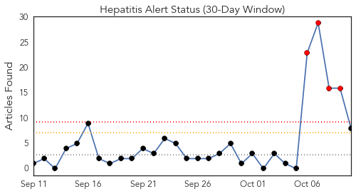
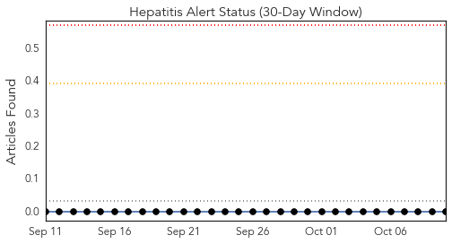
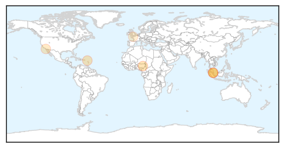
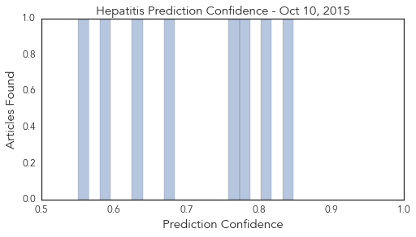
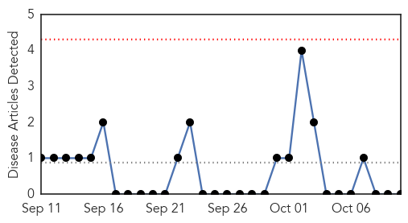
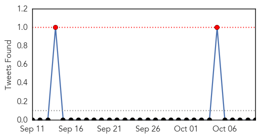
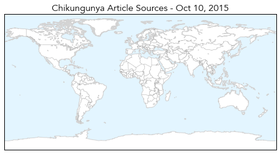

Hepatitis
30-Day Web Trend
4 alerts, 0 warnings

30-Day Twitter Trend
0 alerts, 0 warnings

Article Locations
Article Confidences
Top Articles:
- 0.847
- Reps calls for national policy on Hepatitis B
- 0.812
- WINN FM 98.9 - Newborns Now To Receive Hepatitis B Vaccine
- 0.783
- SGH providing support for hep C outbreak patients
- 0.765
- SGH providing support for hep C outbreak patients
- 0.673
- Lyme disease treatment would prevent infection, researchers say
- 0.637
- SGH to continue providing emotional support for those affected by Hepatitis C cluster
- 0.584
- How accountable is your doctor?
- 0.551
- Fire Nurse Who Reused Syringe While Giving Flu Shots
Top Tweets:
-
No tweets found for Oct 10, 2015
Chikungunya
30-Day Web Trend
0 alerts, 0 warnings

30-Day Twitter Trend
1 alerts, 0 warnings

Article Locations
Article Confidences

Top Articles:
-
No articles found for Oct 10, 2015
Top Tweets:
-
No tweets found for Oct 10, 2015